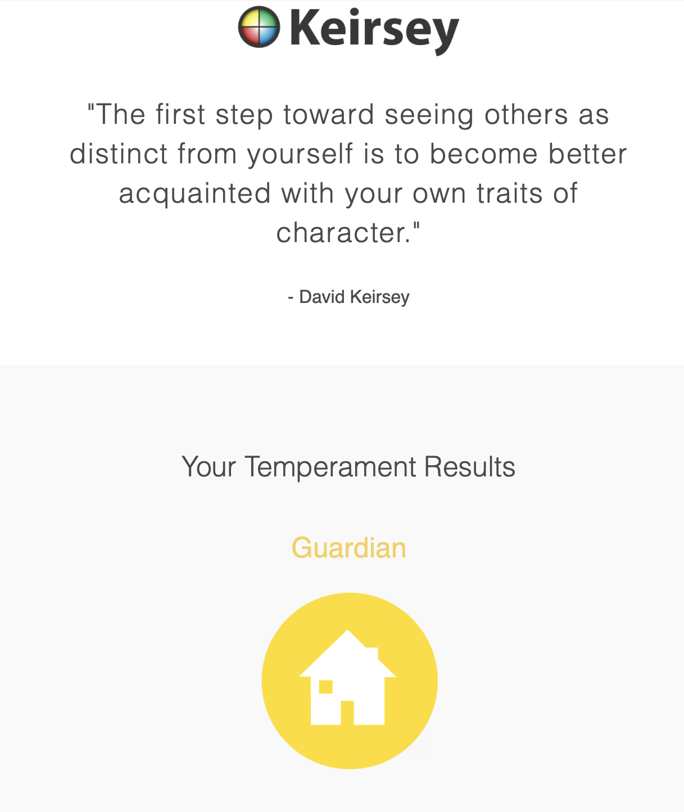

As a computer science student, my strongest trait—problem-solving—drives me to approach academic challenges with logic and creativity.
Whether debugging code, optimizing algorithms, or tackling complex coursework, I embrace each problem as an opportunity to grow.
My curiosity and love for new experiences fuel my passion for exploring emerging technologies, participating in hackathons, and collaborating on innovative projects.
This open-minded attitude helps me adapt quickly to new programming languages and frameworks, making learning an exciting journey rather than a task.
Personality Assessment

Personality assessment tests, while popular, are often too vague and fail to capture the complexity of human behavior.
They rely on generalized categories that overlook the nuances of individual experiences, personal growth, and changing circumstances.
A person’s traits, decisions, and reactions evolve based on life events, cultural influences, and personal development—factors that rigid test frameworks rarely consider.
By attempting to fit diverse personalities into predefined labels, these assessments can be misleading, limiting, and ultimately insufficient in fully understanding a person’s true nature.
Personal Motto
“Never be limited by other people’s limited imaginations.”
From Dr. Mae Jemison (First Black woman in space, Engineer, Physician).
Dr. Mae Jemison is my hero because she embodied qualities that inspire, motivate and guide me in my own journey. She is not just someone who achieved greatness but
someone who overcame challenges with resilience, leds with integrity and uplifted others along the way.